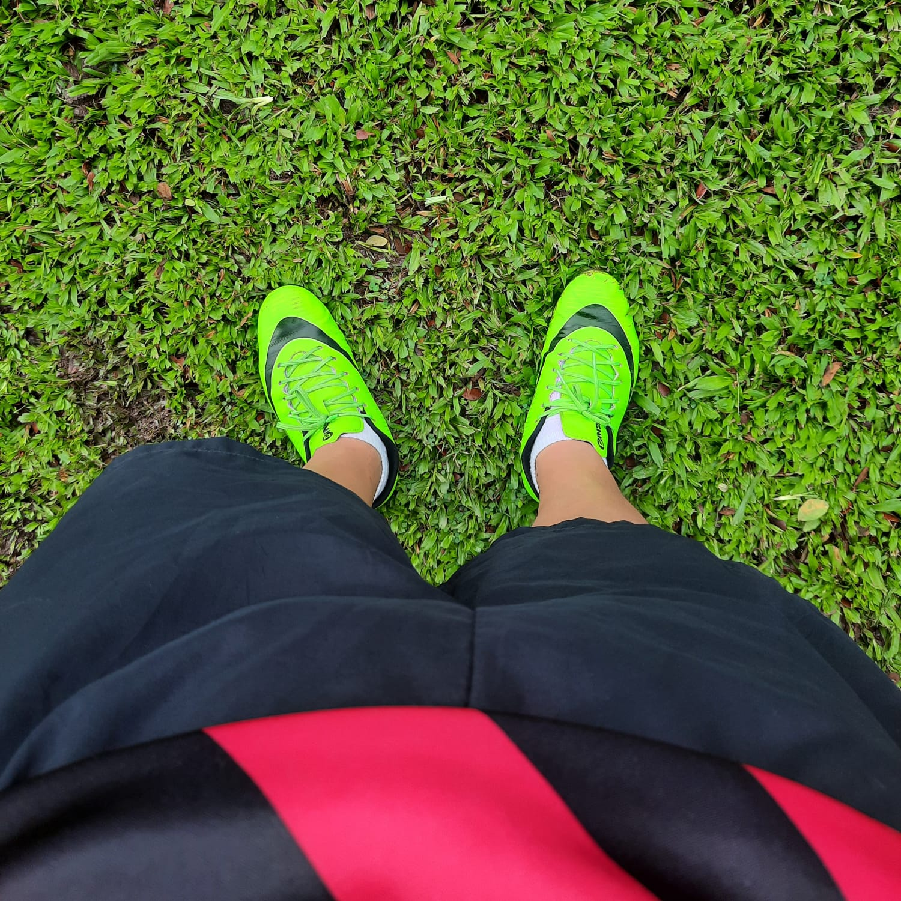

gustos
MIS gustos
gustos
en estas imagenes enseño lo que mas me gusta, mis mascotas como el futbol ya que ellos son
una de las principales causa de continuar con todo este trayecto
mis mascotas porque ellas me han enseñado que el amor y lealtad no tienen lenguaje, ellos con
el amor que me dan me haven entender lo mucho que me quieren y confian en mi
y el futbol porque es algo que hace que se mezclen todos mis sentimientos desde amor,tristeza,enojo y felicidad
y mas con las personas que juego que son mis amigos |
